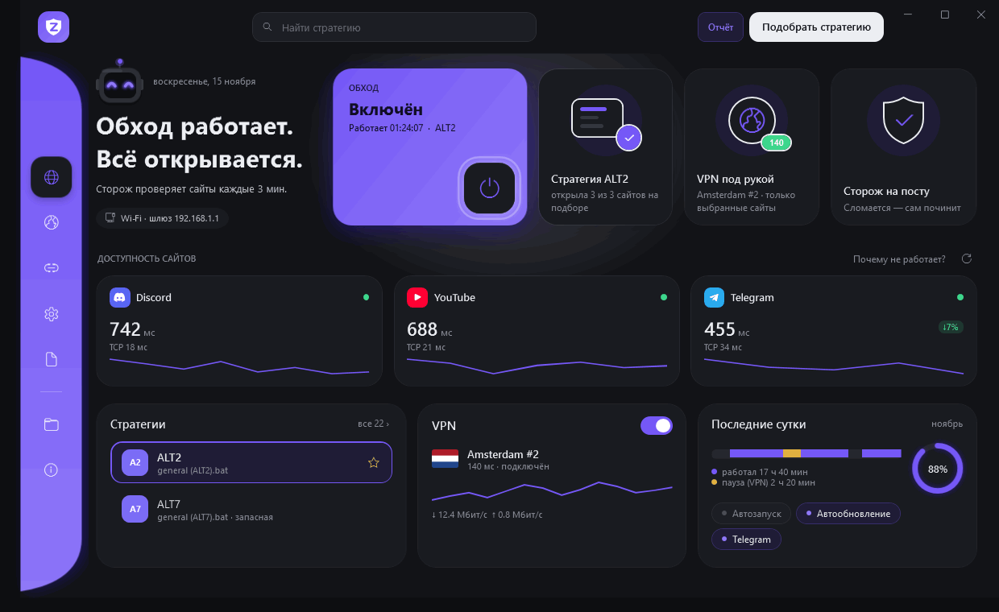
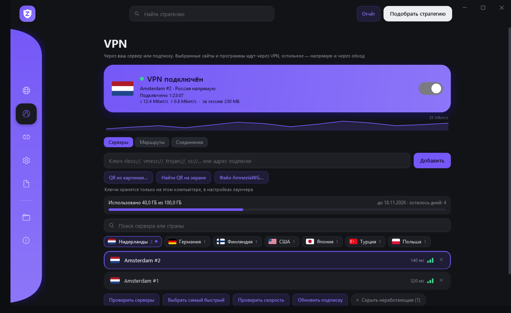
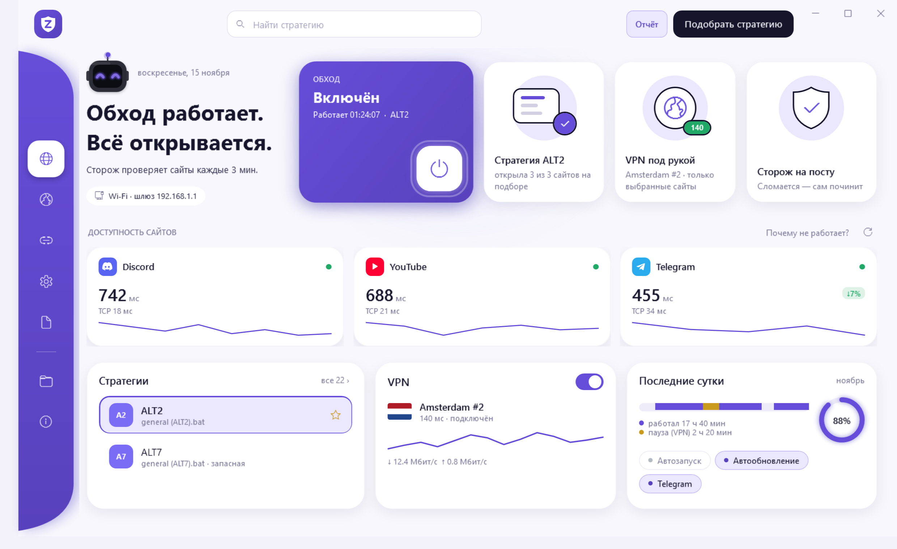

Discord, YouTube и Telegram снова работают — одним нажатием
Удобная оболочка для zapret со встроенным VPN. Без .bat-файлов и консоли: лаунчер сам найдёт рабочую стратегию, обновит её и починит, если что-то сломается.

Что умеет
Обход одной кнопкой
Автоподбор проверяет стратегии на Discord, YouTube, видео и Telegram и включает лучшую. Сторож перезапустит упавший обход и сам подберёт новую стратегию, если сайты перестали открываться.
Встроенный VPN
Ключи vless, vmess, trojan, ss, hysteria2, tuic, AmneziaWG, подписки (в том числе Clash и JSON) и QR-коды. Через VPN — только нужные сайты или всё, кроме российских: банки и Госуслуги работают как обычно.
Само обновляется
zapret, прокси Telegram и сам лаунчер обновляются без вашего участия. Не понравилась новая версия — верните прошлую одной кнопкой. Тёмная и светлая темы, русский и английский.


Установка — минута
- Скачайте ZapretLauncherSetup.exe кнопкой выше.
- Запустите и нажмите «Установить». Лаунчер встанет в C:\ZapretLauncher и сам скачает свежий zapret.
- Нажмите карточку обхода или «Подобрать стратегию» — лаунчер найдёт ту, что работает у вашего провайдера.
Частые вопросы
Windows пишет «Система Windows защитила ваш компьютер»
Это SmartScreen: он предупреждает о любой программе, у которой ещё мало скачиваний. Нажмите Подробнее → Выполнить в любом случае.
Код лаунчера открыт, а установщик собирает GitHub Actions прямо из исходников — это видно на странице релиза.
Антивирус ругается на WinDivert
WinDivert — драйвер, через который работает сам zapret: без него обход невозможен. Антивирусы часто отмечают его просто потому, что он перехватывает сетевой трафик.
Добавьте папку C:\ZapretLauncher в исключения антивируса.
Discord или YouTube всё равно не открывается
Нажмите на главной Почему не работает? — лаунчер по шагам проверит интернет, DNS, мешающие программы, обход и сайты, скажет, в чём дело, и предложит исправить.
Чаще всего помогает Подобрать стратегию: у разных провайдеров работают разные. Если Discord завис на подключении, в меню значка в трее есть Починить Discord — он закроет Discord, очистит кэш и откроет заново.
Сайт не открывается ни с одной стратегией
Значит, провайдер блокирует сам адрес сервера, и zapret тут бессилен. Лаунчер это замечает и подсказывает пустить такой сайт через встроенный VPN — только его, остальное пойдёт как раньше.
Как добавить VPN?
Откройте страницу VPN и вставьте ключ (vless://… и другие) или адрес подписки. Подходят и подписки в формате Clash или JSON. Ключ можно отсканировать с QR-кода — с картинки или прямо с экрана.
Для AmneziaWG и Amnezia Premium добавьте файл из приложения Amnezia кнопкой Файл AmneziaWG….
Куда уходят мои ключи VPN?
Никуда: они хранятся только на вашем компьютере, в настройках лаунчера. Даже отчёт для разработчика собирается без ключей, адреса подписки и адресов серверов.
Зачем права администратора?
Их требует драйвер WinDivert — без них zapret не перехватит трафик. Автозапуск устроен через планировщик Windows, поэтому при входе в систему запрос UAC не появляется.
Как удалить?
Как любую программу: «Параметры» → «Приложения» → «Установленные приложения» → Zapret Launcher → «Удалить». Лаунчер остановит обход и VPN и уберёт всё, что ставил.
Что-то сломалось — куда писать?
На странице «Журнал» нажмите Сообщить о проблеме: лаунчер сохранит отчёт на рабочий стол и откроет заявку на GitHub с уже заполненными версиями. Останется описать проблему и приложить архив.